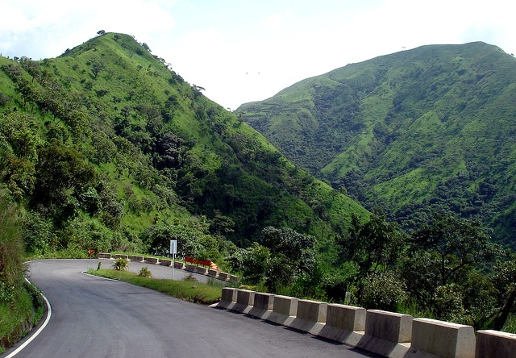
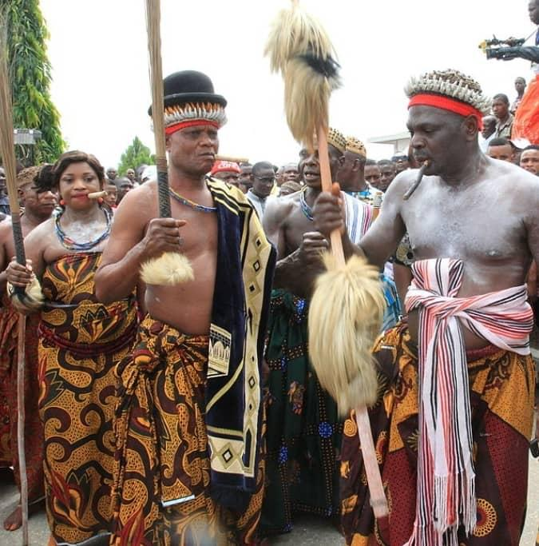

Join the fun loving people of Cross River
Enjoy the beautiful and serene
environment
Climb mountains and interact with nature
Explore the rich Christian heritage of the
one holy Catholic and apostolic
church.
Get help on how to be a catechumen

Feed your eyes with the unique cultural
display of the ancient Yakurr
people
witness culture in the most rich form
I am your guide by name
Joemetry. I give those
who tour with us the
most
awesome
and
memorable
experience they
can ever hope to ge.,
Contact us below to share
in
it!